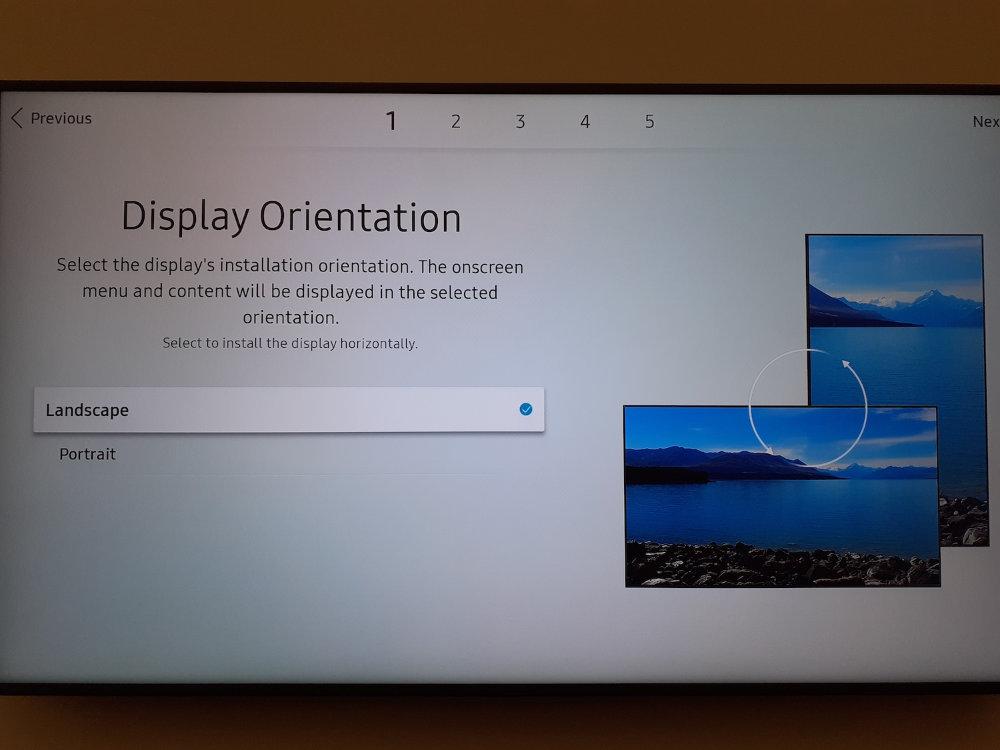
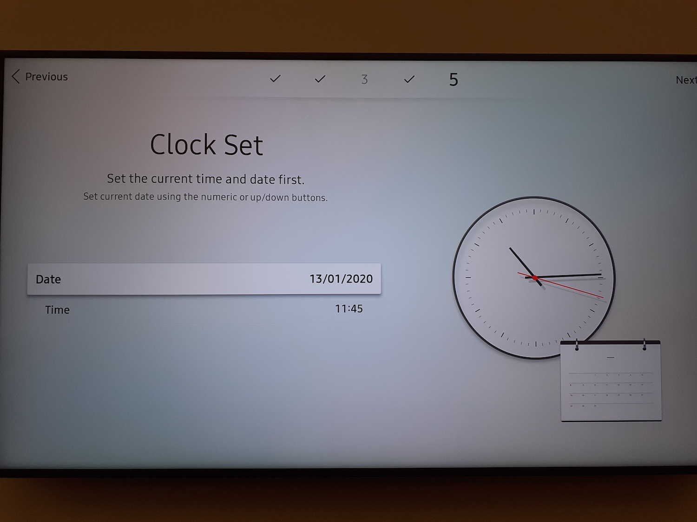

Initialización
Elije tu idioma

Elije LANDSCAPE como orientación de la pantalla
Apagado: Deja el ajuste predeterminado en Off
Configuración de la red
La pantalla buscará automáticamente una conexión a Internet:
Si la pantalla se conecta mediante un cable RJ45, se conectará automáticamente a Internet
No podrá instalar la aplicación si su pantalla no está conectada a Internet.
No conecte su pantalla a un Wifi para invitados (este tipo de red no tiene suficientes permisos para permitir un funcionamiento óptimo)
Para una conexión Wifi: selecciona la conexión inalámbrica deseada, rellena la contraseña y valídala

Conectando con el servidor remoto : Elije 'Configurar ahora'.
Rellena la dirección 'remote.deepidoo.com'.
No modifiques los otros parámetros

Ponga la fecha y la hora
NOMBRE del PERIFÉRICO: No cambias nada

Completa el procedimiento
Para configurar su conexión a Internet con IP fija
Haga clic en el botón HOME del mando a distancia, vaya a ESTADO DE LA RED, y luego valide.
Haz clic en Configuración. Configuración de IP, y luego rellene la configuración de red validada con su oficina central
=> IP Config: elije 'Obtener manualmente'
=> Dirección IP: proporcionada por su sede
=> Máscara de red: proporcionada por su sede
=> Puerta de enlace : proporcionada por su sede
=> Servidor DNS : proporcionado por su sede
Instalación de la aplicación Deepidoo
Haz clic en el botón Menú => Sistema => Leer vía => Lanzar URL => OK

Haga clic en el botón Inicio => Lanzar URL. Entonces introduce la URL 'http://tizen.deepidoo.com' y valídalo haciendo clic en 'Hecho'
Introduzca el código proporcionado por Deepidoo y pulse el botón OK (Compruebe que la dirección mostrada se corresponde con la de su tienda para validarla)

Mi pantalla ya ha sido inizialisada (la hora y el idioma estan configurados)
Vas a configurar tu red, y descargar a la aplicación Deepidoo
Configuración de la red
Comprueba la conexión de la red:
Haga clic en el botón HOME del mando a distancia
Haga clic en Estado de la red
Comprueba
Si estas CONECTADO, vaya te a la etapa de instalación de nuetsra aplicación
Si NO estas conectado, vaya a la etapa siguiente
Comprueba la conexión de la red:
Haga clic en el botón HOME del mando a distancia
Haga clic en Estado de la red
Comprueba
Haz clic en Configuración de IP y rellene la configuración de red validada con la oficina central
Si la conexión es una conexión de red DHCP
=> IP Config: Obtener automáticamente
=> DNS Config: Obtener automáticamente
Si Configuration réseau IP fixe ( Sécurisée), sélectionnez:
=> IP Config: 'Obtener manualmente', Luego rellena los siguientes datos
=> Dirección IP, Máscara de subred, Puerta de enlace
=> Configuracón DNS: Obtener manualmente => rellena los siguientes datos de tu servidor DNS
=> Confirma eligiendo OK

Instalación de la aplicación Deepidoo
Haz clic en el botón Menú => Sistema => Leer vía => Lanzar URL => OK
Haga clic en el botón Inicio => Lanzar URL. Entonces introduce la URL 'http://tizen.deepidoo.com' y valídalo haciendo clic en 'Hecho'
Introduzca el código proporcionado por Deepidoo y pulse el botón OK (Compruebe que la dirección mostrada se corresponde con la de su tienda para validarla)